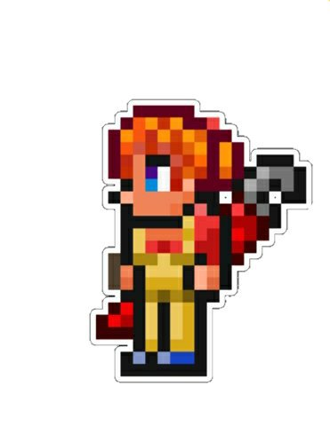

La mecánica se puede localizar en la mazmorra después de haber derrotado a esqueletrón, se encuentra atada, y deberás liberarla. Se encarga de vender articulos para hacer mecanismos para luz, cableado e interruptores.
La Mecánica es uno de los 5 NPC que se encuentran atados y que tienes que liberar, los otros 4 son:
La mecanica |
|
 |
|
Estadisticas |
|
Tipo |
NPC |
Salud |
250 |
Arma |
Llave inglesa de combate |
Defensa |
15 |
Especialidad |
Vender objetos para fabricar mecanismos |
Bestiario |
|
Descripcion |
Una vez atrapado bajo una maldición, el Buhonero es el maestro de los hilos. Si moda lo que deseas, ¡él es el hombre!. Él habla en una manera familiar. |
Bioma preferido |
La tundra |
Deja |
|
Llave inglesa de combate |
12.5% |
IDs internas |
|
ID de bestiario |
124 |
ID de NPC |
16 |
Cuando la liberas:
Cuando no tiene casa:
Cuando hay Luna de Sangre:
Cuando hay Fiesta:
| Objeto | Precio | Disponibilidad |
|---|---|---|
| Llave inglesa roja | 2 |
Siempre disponible |
| Llave inglesa azul | 2 |
Siempre disponible |
| Llave inglesa verde | 2 |
Siempre disponible |
| Llave inglesa amarilla | 2 |
Siempre disponible |
| Alicates | 2 |
Siempre disponible |
| Cable | 5 |
Siempre disponible |
| Palanca | 30 |
Siempre disponible |
| Interruptor | 20 |
Siempre disponible |
| Placa de presión roja | 50 |
Siempre disponible |
| Placa de presión verde | 50 |
Siempre disponible |
| Placa de presión gris | 50 |
Siempre disponible |
| Placa de presión marrón | 50 |
Siempre disponible |
| Placa de presión azul | 50 |
Siempre disponible |
| Placa de presión amarilla | 50 |
Siempre disponible |
| Placa de presión naranja | 50 |
Siempre disponible |
| Placa de presión verde azulado | 2 |
Siempre disponible |
| Activador | 10 |
Siempre disponible |
| Conector | 2 |
Siempre disponible |
| Pista potenciadora | 50 |
Siempre disponible |
| Caña mecánica | 20 |
En la fase de la Luna |
| Regla mecánica | 1 |
Siempre disponible |
| Lente mecánica | 1 |
Siempre disponible |
| Bombilla cableada | 5 |
Siempre disponible |
| Casco de ingeniería | 1 |
Siempre disponible |
| Temporizador de 1 segundo | 50 |
Siempre disponible |
| Temporizador de 3 segundos | 50 |
Siempre disponible |
| Temporizador de 5 segundos | 50 |
Siempre disponible |
| Temporizador de 1/2 segundos | 2 |
Siempre disponible |
| Temporizador de 1/4 segundos | 2 |
Siempre disponible |